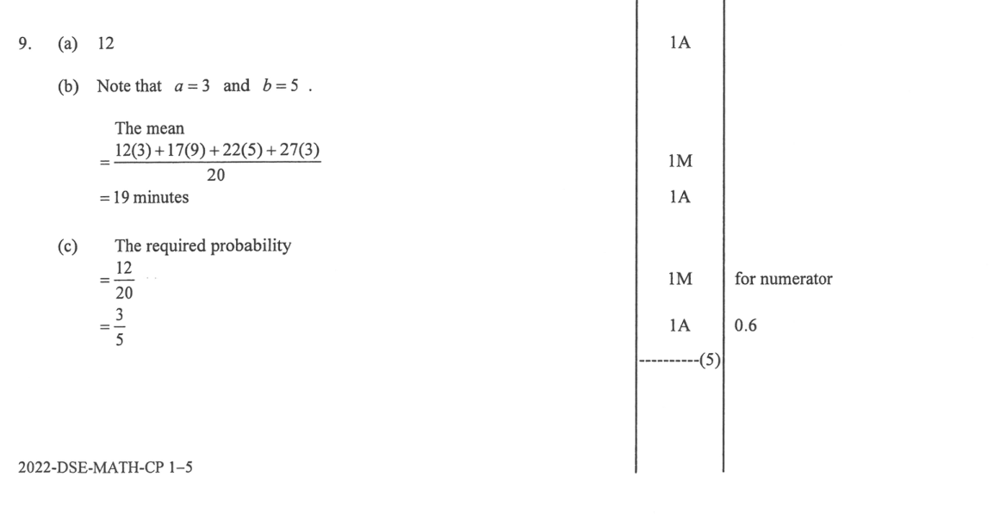

2022 DSE 數學 Paper 1 第 9 題 評卷參考＋詳解
題目（中文卷）
下面的頻數分佈表及累積頻數分佈表均顯示某群學生完成某 3 km 賽跑所需時間的分佈。
| 所需時間（分鐘） | 頻數 |
|---|---|
| 10 – 14 | $a$ |
| 15 – 19 | 9 |
| 20 – 24 | $b$ |
| 25 – 29 | 3 |
| 所需時間少於（分鐘） | 累積頻數 |
|---|---|
| 14.5 | 3 |
| 19.5 | $x$ |
| 24.5 | $y$ |
| 29.5 | 20 |
(a) 寫出 $x$ 的值。
(b) 求該分佈的平均值。
(c) 求從該群中隨機選出的一名學生完成該 3 km 賽跑所需時間少於 19.5 分鐘的概率。
English version（英文卷題目）
The frequency distribution table and the cumulative frequency distribution table below show the distribution of the times taken to complete a 3 km race by a group of students.
| Time taken (minutes) | Frequency |
|---|---|
| 10 - 14 | $a$ |
| 15 - 19 | 9 |
| 20 - 24 | $b$ |
| 25 - 29 | 3 |
| Time taken less than (minutes) | Cumulative frequency |
|---|---|
| 14.5 | 3 |
| 19.5 | $x$ |
| 24.5 | $y$ |
| 29.5 | 20 |
(a) Write down the value of $x$.
(b) Find the mean of the distribution.
(c) Find the probability that the time taken to complete the 3 km race by a randomly selected student from the group is less than 19.5 minutes.
(5 marks)
官方評卷參考（Marking Scheme）

考評報告
（a）甚佳。超過80%考生能寫出x的值。 （b）平平。大約40%考生能求得該分佈的平均值。 （c）良好。超過65%考生能得出所求的概率。